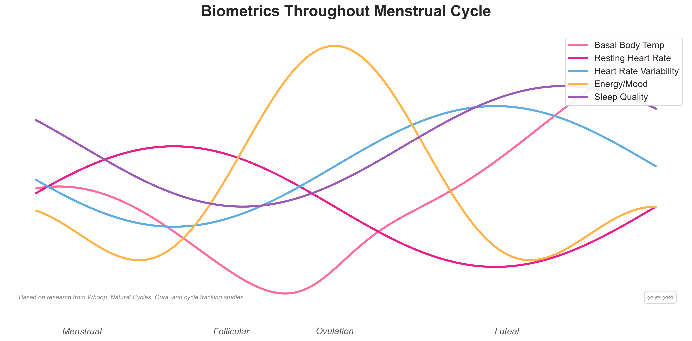

Oura Cycle Insights & Readiness: What They Measure
Cycle Insights and the Readiness Score look like two separate features on your Oura app, but they're built from a lot of the same raw signal. Here's what each one actually reads, how the math works, and where the estimates run out.
Quick Answer: How Oura's Cycle and Readiness Scores Work
Oura measures your average skin temperature from the finger while you sleep and shows it as a plus or minus deviation from your own baseline; closer to 0.0 means closer to your long-term average.[3] Cycle Insights uses those deviations to track the follicular and luteal phases, predict periods and flag a fertile window.[4]
Readiness is a separate, broader daily score built from several contributors, including Resting Heart Rate, HRV Balance, Body Temperature, Recovery Index, Sleep, Sleep Balance and activity measures.[2] Temperature only contributes when it is outside your normal range, so it can lower the score but not raise it.[3] Neither score reads a hormone directly. Both are inferences from physical signals.
Educational content about how the technology works, not medical advice. For personal or fertility concerns, please consult your doctor. Veya is not affiliated with Oura Health Oy.

The same baseline-and-deviation signal underlies both Cycle Insights and the temperature contributor in Readiness.
Open the Oura app during your luteal phase and you may see two things pointing the same direction: a cycle insight noting a temperature shift, and a Readiness Score that's a little lower than usual. It can look like the ring "knows" you're mid-cycle and adjusts your recovery number for it. What's actually happening is narrower and worth understanding, especially if you're trying to decide how much weight to put on either number.
This page is a companion to our broader explainer on how wearables detect your cycle, which covers the same baseline-and-deviation mechanism across Oura, Apple Watch, and Natural Cycles. This one goes deeper on Oura specifically: what Cycle Insights measures, how Readiness is built, and where the two overlap and diverge.
How do you read body temperature on Oura Ring?
In the Oura app, body temperature appears as a plus or minus figure against your personal baseline, not as an absolute reading. Oura says the closer the reading is to 0.0, the closer your current skin temperature is to your long-term average.[3] The daily value is the average of your skin temperature readings from the previous night. You can find it by opening Readiness from the Today or Vitals tab and selecting Body Temperature under Key Metrics.[3]
Oura calculates your normal temperature during the first couple of weeks you wear the ring, then adjusts the baseline as needed. In the Trend view, each date shows a weighted average over a three-day window, with recent days weighted more.[3] Oura says a significant deviation from baseline can indicate a change in your system, such as illness or a change in your menstrual cycle, and it flags readings that fall outside your normal range, above or below 0.0.[3]
That's the same baseline-and-deviation logic every temperature-based cycle feature runs on. A plus-or-minus number is a more useful way to spot a cyclical shift than an absolute reading would be.
How does Oura Cycle Insights read your cycle phase?
Oura says Cycle Insights uses temperature deviations to track, predict and visualize your monthly cycle, and that it's available to Gen3 or later members with an active membership.[4] The underlying signal is the post-ovulation rise: in a pilot study of 22 women wearing the Oura ring, nocturnal skin temperature was higher in the luteal phase than the follicular phase, by 0.30 °C on average.[1] Progesterone is behind that rise (see our progesterone entry).
Oura describes three things it does with that signal:
- Track the two main phases. Cycle Insights tracks the follicular and luteal phases.[4]
- Predict periods. You can see period predictions for the next 12 months, using your nightly average body temperature along with other biosignals like HRV.[4]
- Flag a fertile window. Oura's fertile window spans seven days, from five days before ovulation through the day after, and it says confirming ovulation takes around 3-5 days based on temperature patterns.[4]
Setup starts with a short questionnaire about your last period date and typical cycle length.[4] If you use hormonal contraception, Oura says the phases and fertile window aren't relevant, so you'll only see period predictions.[4]
What feeds the Oura Readiness Score?
Readiness is a different score with a different job. It's meant to summarize how recovered your body is on a given day, and it draws from several contributors, not just temperature:[2]
- Resting Heart Rate, your lowest heart rate from the previous night against your long-term average.
- HRV Balance, your average HRV over the past 14 days against your three-month average, with recent days weighted more.
- Body Temperature, the previous night's temperature against your long-term nighttime average.
- Recovery Index, how long you sleep after your heart rate reaches its lowest point overnight.
- Sleep and Sleep Balance, your total sleep against your baseline and your sleep debt over the past two weeks.
- Previous Day Activity and Activity Balance, your recent activity against your long-term levels.
Oura says the temperature contributor only contributes to your scores when your average body temperature is abnormal, so it can lower your Readiness Score but not raise it.[3] Oura describes "abnormal" as outside your own normal range, not a fixed number. That means a luteal-phase rise that fits your own pattern may barely register, while a rise that falls outside your usual range is more likely to be flagged.
Why can Readiness dip in the luteal phase?
In a study that tracked healthy women with Oura rings across a full cycle, nocturnal heart rate and temperature were higher in the mid- and late-luteal phases than at menses, and HRV (rMSSD) tended to be lower.[6] Two within-person studies also found that higher-than-usual progesterone predicted lower-than-usual HRV.[5] Since HRV Balance is a Readiness contributor, a luteal-phase HRV dip can show up as a slightly lower Readiness Score even when nothing is wrong. The score is registering a real physiological shift, just not necessarily under-recovery.
How do Cycle Insights and Readiness differ?
Cycle Insights is about where you are in your cycle. Readiness is about how recovered you are today. They share the temperature signal but use it differently.
| Cycle Insights | Readiness Score | |
|---|---|---|
| What it is for | Tracking follicular and luteal phases, period predictions and a fertile window[4] | A daily summary of how recovered you are[2] |
| How temperature is used | Deviations from baseline are used to track, predict and visualize the cycle[4] | Body Temperature is one contributor, and only contributes when abnormal[3] |
| Which direction temperature can move it | Not a score | Can lower the score, cannot raise it[3] |
| Other inputs | Other biosignals like HRV for period prediction windows[4] | Resting heart rate, HRV Balance, Recovery Index, sleep and activity contributors[2] |
What can Oura's cycle and Readiness scores not tell you?
Being precise about the mechanism means being precise about its limits too.
- Neither score reads a hormone. Oura measures temperature, heart rate signals, and sleep, and infers the rest.
- Cycle detection is retrospective. Oura says confirming ovulation takes around 3-5 days based on temperature patterns, so it can't tell you ovulation is about to happen.[4]
- Readiness isn't a diagnosis. A low score reflects a pattern in your biometrics, not a medical explanation for why they shifted. It could be your cycle, poor sleep, travel, or something else entirely.
- Symptoms and mood aren't in the model. A ring can see your temperature climb. It can't see that you also feel foggy, sore, or unusually anxious that week, because none of that is a signal the sensor reads.
That gap between what a ring measures and what you actually experience is where logging comes in. A ring supplies the objective numbers overnight. Pairing that with your own notes on symptoms and mood is what turns a temperature deviation into something you can actually explain to yourself, or to a doctor. A tracking app like Veya can sync Oura data alongside the symptoms and mood you log by hand, so a Readiness dip sits next to the fact that you also logged cramps and poor sleep that week, instead of showing up as an unexplained number on its own.
The Short Version
- Both scores draw on the same overnight skin temperature, reported as a deviation from your personal baseline, where closer to 0.0 means closer to your long-term average.
- Cycle Insights uses temperature deviations to track phases, predict periods and flag a fertile window, with ovulation confirmed after the fact.
- Readiness folds temperature in with heart rate, HRV Balance, Recovery Index, sleep and activity contributors, and temperature can only pull the score down, never up.
- Neither score measures a hormone directly, and neither is a substitute for the context you get from logging how you actually feel.
Once you know what's under each score, the numbers stop being a mystery and start being something you can reason about.
Frequently Asked Questions
Educational information based on published sources. Not medical advice. For personal concerns, please consult your doctor.
What does Oura's Cycle Insights feature actually measure?
Cycle Insights reads your nighttime skin temperature as a deviation from your own baseline, not an absolute number. Oura builds that baseline over your first couple of weeks of wear, and uses the deviations to track the follicular and luteal phases, predict periods and flag a fertile window.[3][4] It does not measure estrogen, progesterone or LH directly.
How do you read body temperature on Oura Ring?
Oura shows it as a plus or minus figure against your personal baseline. The closer it is to 0.0, the closer your skin temperature is to your long-term average. The daily value is the average of your readings from the previous night, and the Trend view uses a three-day weighted average.[3]
Why is my Oura cycle insight late or delayed?
Oura says confirming ovulation takes around 3-5 days based on temperature patterns, and a new cycle is recognized only after at least 12 days have passed since your last period start.[4] A new or replacement ring also needs time to re-establish your temperature baseline, which Oura says can take a few weeks.[3]
Does body temperature raise or lower the Oura Readiness Score?
Oura says Body Temperature only contributes to your scores when your average is abnormal, so it can lower the Readiness Score but cannot raise it.[3] Other contributors, such as HRV Balance, compare you with your own averages over longer windows.[2]
Can Oura tell me exactly when I ovulated?
No. Oura estimates a fertile window and confirms ovulation from temperature patterns after the fact, which it says takes around 3-5 days.[4] In a pilot study, the best-performing algorithm detected ovulations with a sensitivity of 83.3% within a window from 3 days before to 2 days after the urine-test-verified ovulation.[1]
What's the difference between Cycle Insights and the Readiness Score?
Cycle Insights is about cycle phase, period prediction and the fertile window, built from temperature deviations. Readiness is a broader daily score built from contributors like Resting Heart Rate, HRV Balance, Body Temperature, Recovery Index, sleep and activity.[2][4] Temperature feeds both, but in Readiness it can only lower the score.[3]
Is Oura's cycle tracking accurate enough to use for birth control?
No. Oura says fertile window predictions should not be used as a form of birth control.[4] If you need a contraceptive method, that's a conversation for your doctor, not a wearable feature.
A temperature deviation is only half the picture.
Oura tells you your numbers moved. It can't tell you why it felt like that week. Sync your ring and log the symptoms and mood alongside it to see the two side by side.
Log One Cycle Alongside Your Oura DataLogging takes a few seconds a day.
References
- Maijala A, Kinnunen H, Koskimäki H, Jämsä T, Kangas M. Nocturnal finger skin temperature in menstrual cycle tracking: ambulatory pilot study using a wearable Oura ring. BMC Womens Health. 2019;19(1):150. doi:10.1186/s12905-019-0844-9
- Oura Health Oy. Readiness Contributors. Oura Help Center, accessed October 2026. support.ouraring.com
- Oura Health Oy. Body Temperature. Oura Help Center, accessed October 2026. support.ouraring.com
- Oura Health Oy. Cycle Insights. Oura Help Center, accessed October 2026. support.ouraring.com
- Schmalenberger KM, Eisenlohr-Moul TA, Jarczok MN, et al. Menstrual Cycle Changes in Vagally-Mediated Heart Rate Variability are Associated with Progesterone: Evidence from Two Within-Person Studies. J Clin Med. 2020;9(3):617. doi:10.3390/jcm9030617
- Alzueta E, de Zambotti M, Javitz H, et al. Tracking Sleep, Temperature, Heart Rate, and Daily Symptoms Across the Menstrual Cycle with the Oura Ring in Healthy Women. Int J Womens Health. 2022;14:491-503. PMC9005074
Related Reading
How Wearables Detect Your Cycle: The Tech Explained
The full mechanism across Oura, Apple Watch, and Natural Cycles: baseline, deviation, and why detection is always a step behind.
Apple Watch Ovulation Estimates: How They Work
The same temperature-deviation idea, built into a wrist sensor instead of a ring.
Apple Watch vs Oura vs Garmin: Which Wins for Cycle Tracking?
Which device to pick, and how to train and recover with the data once you have it.
How to Tell If You're Ovulating
The signs of ovulation and what temperature, LH tests, and cervical mucus each tell you.
Natural Cycles vs Oura Ring: Cycle Tracking Compared
Oura's temperature data can feed directly into Natural Cycles. What each app does alone, together, and where tracking still fits.